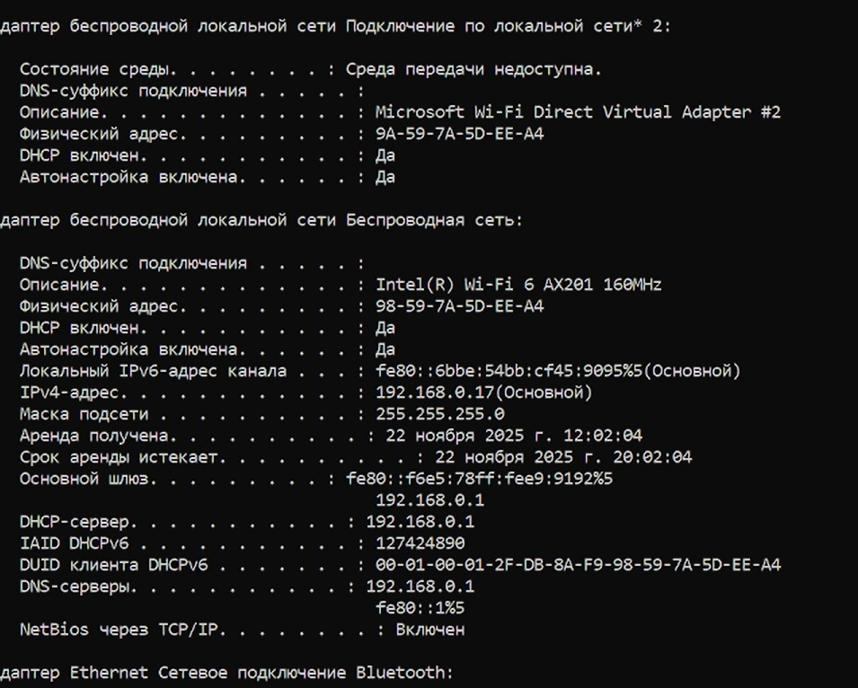
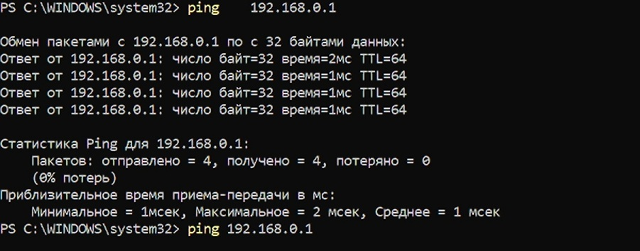
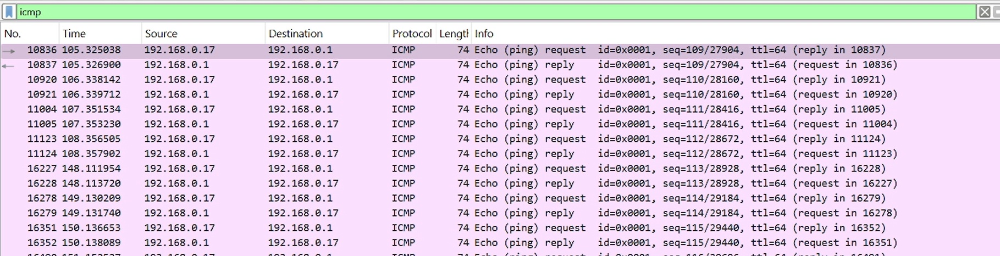
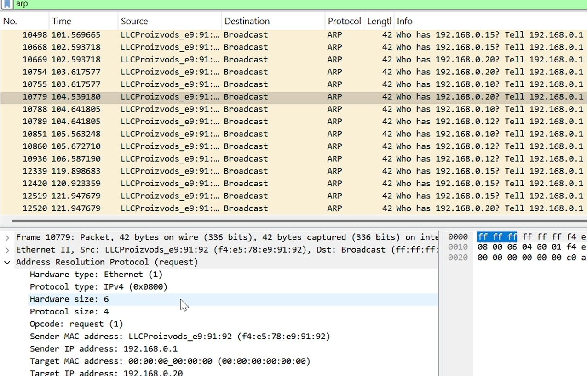
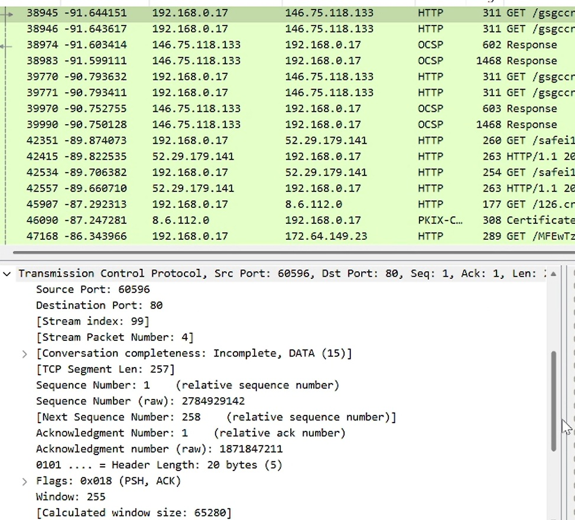
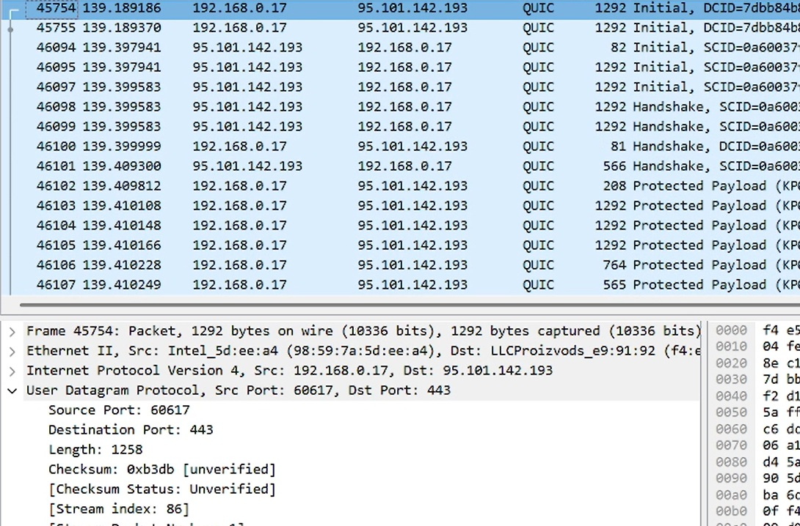
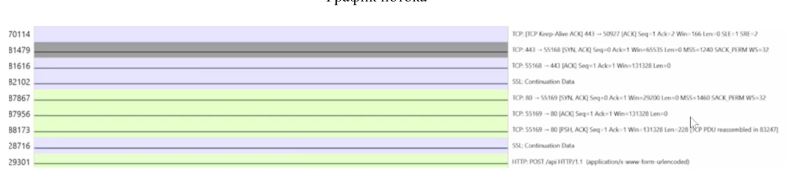

- Wireshark - анализатор сетевого трафика
- TCP/IP - стек протоколов
- Ethernet - канальный уровень
- ARP, ICMP, HTTP, DNS, QUIC - анализируемые протоколы
ФИО: [Ваше ФИО]
Группа: [Ваша группа]
Дата: [Дата]
Мой MAC-адрес: 98-59-7A-5D-EE-A4

Команда: ping 192.168.0.1

Фильтр: arp or icmp

ARP-запросы:

GET запросы:

Особенности QUIC:

Three-way handshake:
